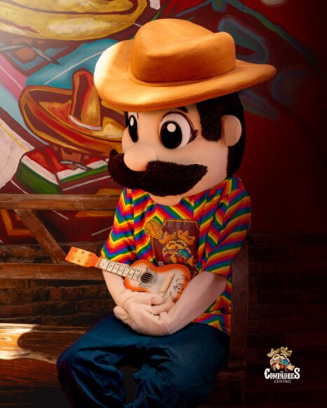
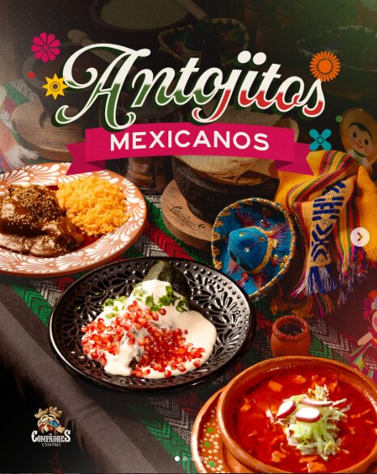
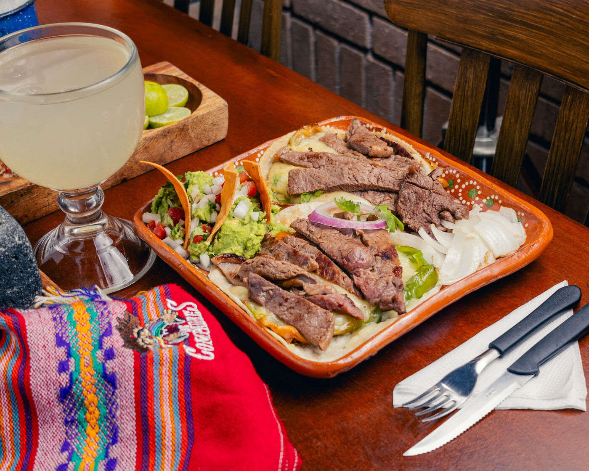
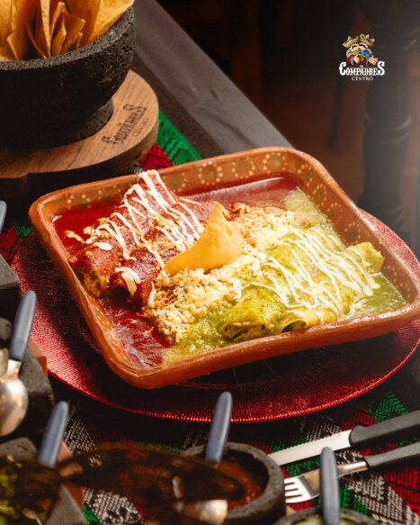
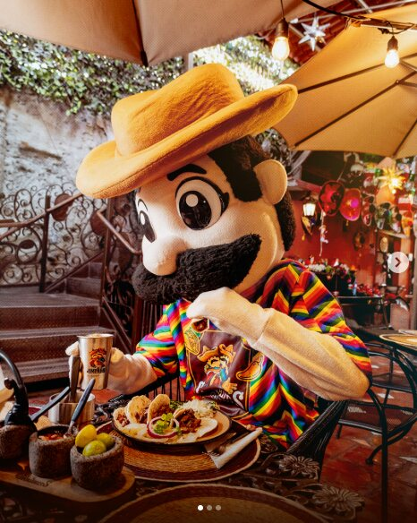
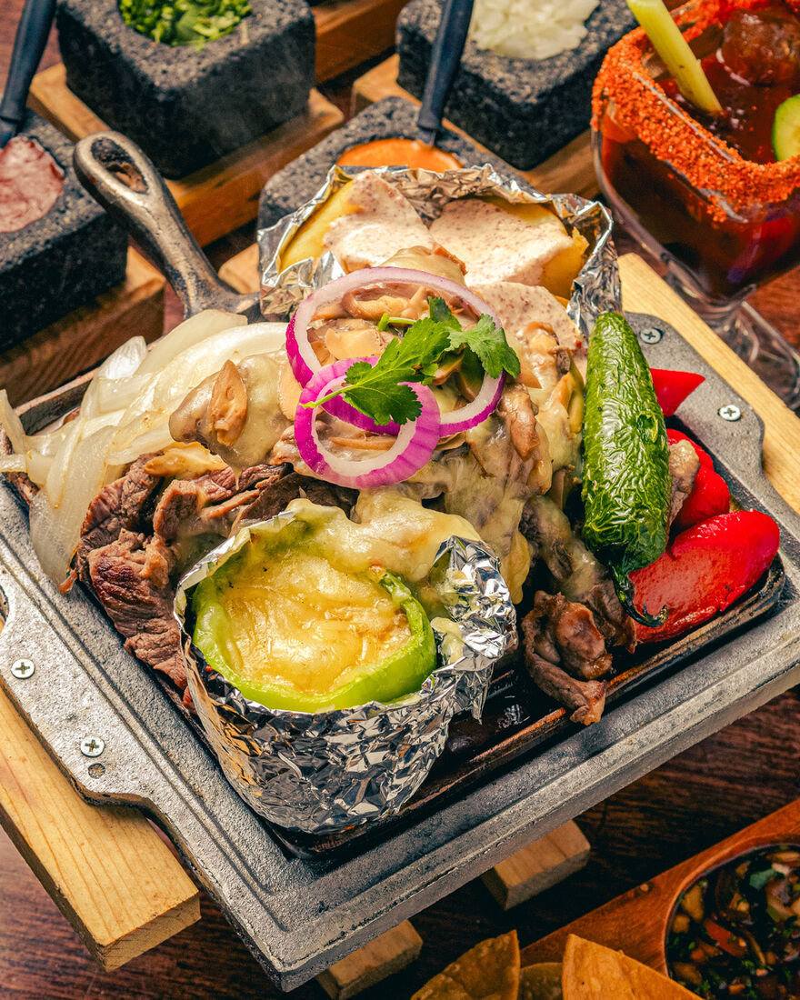
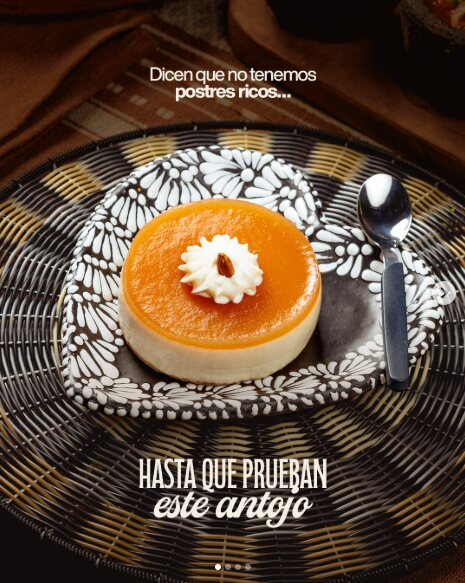
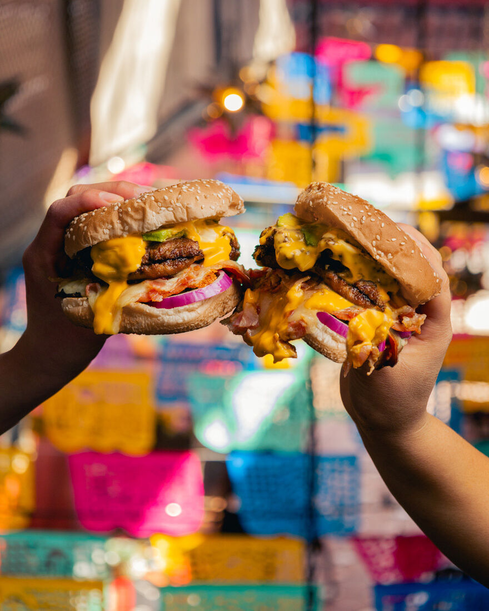

Desayunos de casa
Machacado, huevos al gusto, chilaquiles y café de olla con refill.
Saltillo, Coahuila · Desde 1985
Desayunos caseros, chilaquiles de la casa, tacos al carbón y cortes que hacen chillar al asador. Frente a la Iglesia de San Francisco.
Todo comenzó el 19 de marzo de 1985, en el centro de Saltillo, frente a la emblemática Iglesia de San Francisco. Era un pequeño negocio de tacos de carne asada que abría de 6 de la tarde a 1 de la mañana.
Lo fundaron el Lic. Juan Antonio Aguirre Valdéz y su compadre; aunque la sociedad duró apenas unos meses, el nombre se quedó como herencia. Junto con su esposa, la Profra. Emilia Margarita Destenave Kuri, Juan Antonio apostó todo por Los Compadres hasta convertirlo en un negocio 100% familiar.
Desde el principio la idea fue que cada invitado se sintiera como en casa. Por eso Doña Emilia sumó los desayunos con sazón casero, y de su cocina nacieron clásicos como nuestros chilaquiles en salsa de chicharrón, creados en los años 90.
Hoy, casi cuatro décadas después, seguimos en el mismo corazón de Saltillo, sirviendo la misma tradición a nuevas generaciones.

Machacado, huevos al gusto, chilaquiles y café de olla con refill.
Arrachera, sirloin, T-bone y parrilladas para toda la familia.
Tacos en harina o maíz de nixtamal, piratas, gringas y más.
Un espacio lleno de color, música y tradición mexicana.
Un antojo para cada momento del día.







Síguenos para ver más: @loscompadrescentro
Calle Benito Juárez Ote. #463, Zona Centro
Saltillo, Coahuila · Frente a la Iglesia de San Francisco
Apreciable cliente: tu opinión es muy importante para nosotros. Ayúdanos a mejorar nuestro servicio.